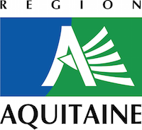

The goal of this project is to reduce our footprint on environment by enhancing the interface between citizens, recycling facilities and reusers
In Aquitaine Region:
Get data We need to know in real time the number of users and the level of each containers.There are many different players in the field with either no data collection or a specific scheme. We are producing a global, objective and real time data on recycling.
Provide public information We then provide this data through a mobile application answering the simple question: where should I go to get rid of this kind of waste in the most efficient manner ?
Crowdsource elements and organize reuse The queries to our app produces precise data on where and what waste are produce where and when. With this global vision, we plan efficient pick up tours with specific reusers and citizens no longer need to take their cars to get rid of something.
This project is supported by
We work in collaboration with various operators
Our sensors measure in real time:
Privacy is enforced by design: the data is analysed inside the sensor and the only information transmitted is the number the affluence and bin levels.
We are designing a mobile application to help people get rid of their stuff. Using predictive modeling on our harvested data, we are able to tell people where and when they should go.
As the number of users grow, crowdsourced data gives us a clear picture of the waste production and this is where the biggest change can take place.
Knowing on the city scale all the people that want to get rid of their waching machine, we can compute the optimum trip to collect all these waching machine. Chaos entails wastes, order creates elements.